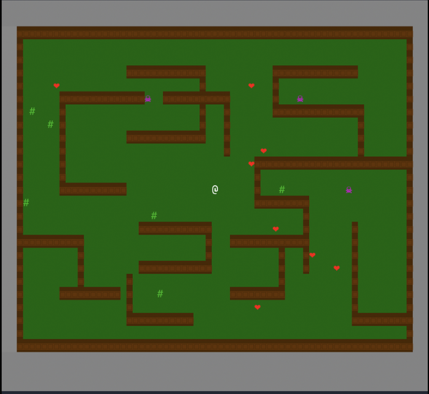

OLÁ, MEU NOME É
Fernando
Khoury
Estudante do Insper, programador e interessado em cibersegurança. Gosto de entender como a tecnologia funciona e de criar projetos que resolvem problemas reais.
CONHEÇA UM POUCO MAIS
Sobre mim
Sou estudante do Insper e participo do Insper SEC, grupo acadêmico focado em cibersegurança. Tenho interesse em programação, segurança digital e desenvolvimento de projetos utilizando tecnologia.
Gosto de aprender como sistemas e programas funcionam, encontrar formas de melhorá-los e desenvolver minhas habilidades por meio de projetos práticos.
Atualmente, estou estudando programação em Python e desenvolvendo projetos acadêmicos. Quero continuar aprendendo novas linguagens e aprofundar meus conhecimentos em cibersegurança.
Habilidades e interesses
MEU TRABALHO
Projetos
PROJETO 01
Projeto individual
Jogo desenvolvido em Python como projeto individual durante meus estudos no Insper. O projeto utiliza programação para controlar o personagem, criar o cenário e definir as mecânicas do jogo.

FALE COMIGO
Contato
Caso queira conversar sobre programação, cibersegurança, projetos ou oportunidades, entre em contato comigo.